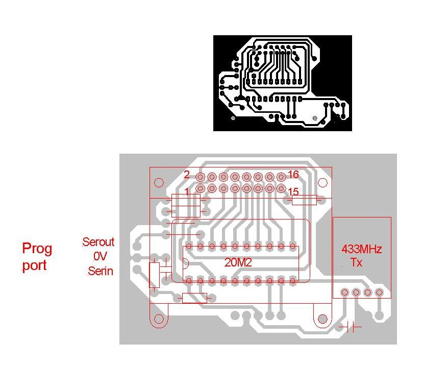

Hi,
My first post here, having only just found this forum.
For the past week or so I've been working on an idea for a unit to mimic the job that the Immersun excess PV to immersion unit does, as we're currently building a passive house that will have a 6kWp PV array and it makes sense to use that to boost the relatively low temperature from our heat pump (the system uses a small heat pump to get the heat store tank to 35 deg C, and the PV driven immersion will take the heat store from 35 deg C to as high as I can comfortably get it ).
I've only today come across the excellent device that Robin Emley here has come up with, and wish, perhaps, that I'd found it before embarking on my own design. However, I'm not an Arduino person, and find the whole way that the Arduino works more than a little bit confusing, and Github seems to me to be impenetrably geeky.
I've already built a few simple µprocessor gadgets, including a data logger that monitors temperature and humidity at several locations around the house (and outdoors) and stores the data on a µSD card (see here: http://www.picaxeforum.co.uk/showthread.php?20551-Environmental-uSD-card...) and more recently a portable CO2, temperature and humidity meter and datalogger (see here: http://www.picaxeforum.co.uk/showthread.php?23893-Air-quality-monitor-an...).
For this excess PV power to immersion project I took what I thought to be the easy way out when it came to accurately measuring AC power. There seem to be lots of readily available energy meter chips around, intended for use within electricity meters. The range from Analog Devices looked particularly promising, but like the others seem now to only be available as surface mount (I find it easier to work with through hole parts - it's an age and eyesight thing........). Luckily I found some old stock AD7755 energy meter ICs, which are virtually identical to the current ADE7755 (see: http://www.analog.com/en/analog-to-digital-converters/energy-measurement...) in terms of function, but comes in a 24 pin narrow DIP package.
The neat thing about using one of these as a front end is that all the stuff that needs to be done relatively quickly and accurately to measure voltage and current amplitude and phase is all done on the chip. With the chip set to high frequency mode it outputs a stream of pulses with a frequency proportional to real power, plus another line that indicates whether power is being imported or exported. This seemed to me to be a good starting point, as for the princely sum of around £2.00, plus some peripheral bits, like the CT and power supply, I seemed to have most of the hard work done.
So far I've been unwittingly paralleling the work that Robin Emley has done, even to the extent that I bought (for less than £10 from ebay) the exact same Carlo Gavazzi controller. My intention was to use a µcontroller to read the true power from the AD7755 whenever the AD7755 indicated that power was being exported. I will then just use a control loop to drive the Carlo Gavazzi just enough to keep system *just* exporting by a small amount.
Having now stumbled across this forum, and in particular the rather clever "energy bucket" principle that Robin Emley has come up with, I'm seriously thinking about revising my code to work in a similar way, but not using an Arduino. My quick thoughts are to measure real power for a short period (just count the pulses from the AD7755 when it's in export mode) to get energy, accumulate energy (less a small "leak") in a counter until it reaches the equivalent of 1800 J (half the threshold energy of most meters, I believe) and then dump 1800J worth of energy into the immersion, resetting the energy accumulator in the process, before going through the whole process again.
Because the AD7755 outputs real power and direction continually, I may add a display to show the imported and exported power, plus perhaps accumulated energy for each over time. Adding accumulated immersion diverted energy should also be possible, provided I can separate it out from the rest of the domestic loads.
Sorry for the lengthy introduction.
Jeremy
Re: PV to immersion diverter idea?
Welcome, Jeremy.
I take it you've also read up about Energy Meters. It's the characteristics of the meter that drove the design. Actually, and of course depending on the accuracy of your measurement system (by that I mean how closely it is matched to your tariff meter) you don't need to leak energy back to the grid, you just need to ensure that that the nett transfer is below the creep threshold of your meter.
I think you might be heading for a control algorithm that's been tried here before, all I can say is Robin's control loop - where the feedback loop adjusts to a null (zero nett energy transfer) - is inherently more elegant and more accurate than measuring the generated and consumed energies separately. I think your meter i.c. could do that if you use the import/export line as the 'sign' for the pulse train. And then you copy Robin's algorithm more or less exactly, including the anti-flicker features.
Trystan has done some work on Appliance inference which you might not have found yet! jack_kelly is interested in this topic too - see http://openenergymonitor.org/emon/node/285
Re: PV to immersion diverter idea?
Thanks for the welcome. I've been busy reading through the forum pages here, but have more to read! Thanks for those links, they've certainly pointed to things here I hadn't yet found.
My intention is to use the AD7755 to do as you suggest, act as a bidirectional energy meter. Hopefully it should be as good as my tariff meter (once calibrated).
My initial code (prior to finding this forum) uses a PID control loop to set the output power to a notional small export target value. To try this out I first had to build a "simulator" to mimic the way that I think the PV, house loads and immersion might react as each load or the PV changes. That wasn't anywhere near as easy as I'd thought! All sorts of potential gotcha's when you have two control loops interacting (the simulator control loop trying to dynamically mimic the AD7755 response to changing house and PV loads and the diverter control loop that I was trying to tune to get reasonably quick response with no overshoot).
Having now seen Robin Emley's idea of "trampolining" sub-meter threshold energy levels between the grid and the immersion I have to say that it does seem very elegant. Having already built a PCB I'm reasonably confident that I can just change the code and make mine work the same way.
During the course of looking at how to measure energy reliably, I came across quite a few cheap energy meter chips, and I suspect that, with a bit of detective work it would be possible to find out exactly which is used in each make/model of electronic tarriff meter. The ones I've got hold of can also drive an electromechanical counter directly, so are, in effect, a stand-alone meter system. The handy feature, though, is the fact that the chip outputs a pulse train at a frequency proportional to instantaneous (not averaged) real power. With a frequency of around 5500 Hz for full scale this gives pretty good resolution (around 0.733 Hz for 1 W with a 30A CT, at max allowable mains voltage). There is an understandable 100Hz ripple on this high frequency output, giving around a 10% fluctuation in period from pulse to pulse, but as power should be averaged over a few cycles this shouldn't present a significant issue, I think. The data sheet for the AD7755 describes well the basic principles used, and looking at some of the other manufacturer's product data sheets it seems that virtually all work in much the same way.
The anti-creep feature, for example, can be enabled or disabled on the AD7755. For my purposes I've disabled it, so that the chip should give real import/export indication at very low power levels (although with anti-creep enabled the threshold is only 1.7W for a meter with a constant of 100 impulses per kWh).
Assuming that it's OK to "trampoline" up to just under 1 Wh across the meter without it starting to record consumption, then it should be possible to do this quite slowly (I can't quite grasp C++, so can't fathom out the code Robin Emley has used for anti-flicker- give me assembly language or one of the control languages and I'm reasonably OK!). If that's the case, then the energy bucket could be emptied as one big hunk of 1800 J whenever it reached the half-way point. That pretty much removes any need for synchronisation with zero crossing, assuming a zero crossing SSR is used.
I see I have a lot more reading to do here......................
Jeremy
Re: PV to immersion diverter idea?
FWIW-
http://openenergymonitor.org/emon/node/2044
Re: PV to immersion diverter idea?
Thanks, I'd seen all the stuff on Robin Emley's design, it's what led to me finding this forum earlier.
As I wrote in my first post, I'm not an Arduino person, so am going to stick with using a PIC, simply because I've many years experience with PICs and before that coding in assembler and raw machine code going back to the early days with the 6800 (and before that PDP 11 code..........). I'm too old to get to grips with C++, having spent a few hours trying to decode even Robin Emley's well-commented code I am even more convinced that I'm far more comfortable sticking with stuff I already know and understand well, rather than spend time I don't have to get even vaguely competent with a new language and hardware platform.
Having looked at the algorithm being used to determine true power in the Arduino based approach I'm reasonably confident that the dedicated tariff meter front end chip is a more accurate approach, which is another reason for going down this route. The Analog Devices meter front end chips, for example, seem to use a pretty accurate, dedicated and pretty fast digital processing approach in hardware, and are, I believe, likely to give a slightly better measurement for the sort of distorted current waveform that seems quite common on a domestic supply.
The other advantage of this approach is price. The meter front end chips are cheap, as are PICs. The combination of a small PIC and a decent meter front end chip is less than £3. Add in the cost of a CT, mains transformer and a cheap SSR and the unit component cost could be under £20. Cheap enough to not be a painful loss if the experiment doesn't work out!
Re: PV to immersion diverter idea?
Jeremy
Your self description could so easily be me! PDP 11 (40 & 45 in my case) Also PDP 8. MC6800 assembler .........
C++ looked scary but for whatever reason I built a version of Robin's brilliant energy diverter. I expected many hours wrestling with unfamiliar tools and systems but instead with a little help from this excellent forum I had my unit happily diverting power in no time at all.
If you simply follow the well trodden path that Robin has been so kind to lay for us you will have all the support you need and trust me you will not have to understand a single line of Robin's code to get your system working.
If you don't like using stripboard you can even get some nice clunky PCB's from Richard (richmc).
I am sure you are capable of re-inventing the energy diverter 'wheel' but life is short ...
Re: PV to immersion diverter idea?
Pleas read my posts regarding "cheep SSRs" I would never use one, there are far too many dodgy copies that pose as being from reputable sources, pay less than £30 and you are asking for trouble.
Genuine Arduino unos are available for £12 now, you will find the hardware more of an expense than the components. As for understanding the programme syntax of the uno I don't understand one line of it, I trust Robin on that score, I just do the hardware and soldering, and am happy to say the system works, from the very first version of the software to the very latest, it just gets more elegant.
Re: PV to immersion diverter idea?
Just to reiterate something I've already mentioned, I've built the PCB, and have the PID code sort of working, so am committed to the PIC solution. Sorry if that's seen as a bad move, it happens to be something I'm comfortable with coding, so I am going to stick with it.
The Carlo Gavazzi controller I have doesn't seem to be a "Chinese cheapie" to me, yet was under £10 on ebay. In anticipation of going to the "energy bucket" approach I've just bought a brand new 25A Crouzet SSR for £6. I'll eat my hat if Crouzet produce "dodgy" products, they have far too good a reputation to risk, I'd have thought. I'd personally not touch some of the Chinese products that infest ebay, but that's not to say that there aren't plenty of genuine branded products around at good prices from UK sellers on there.
I appreciate that the Arduino fans are happy to pay £12 for something that can be done by a £0.50 PIC, but it seems like a real sledgehammer to crack a nut approach to me, I'm afraid. The processing needed when using a dedicated energy measurement front end is very modest, just a few tens of bytes of code.
I'm not in any way being critical of Robin Emley's designs, quite the opposite. It was the elegance of his energy bucket approach that drew me to this forum.
As I said in my first post here, I'm building a new-build passive house that will be pretty intensively instrumented. It just doesn't make sense for me to change everything I've done to date and switch to a different hardware platform and re-write, re-test and re-evaluate all the subsystems built to date.
Re: PV to immersion diverter idea?
I worked quite closely with Robin when he was developing his design, so feel free to ask about C++ or his algorithms. PM me if you wish. (Robin's away at the moment, I expect he'll chip in about a week from now!)
And as we're all on a Memory Lane trip, I started my programming in Fortran 4 at the end of a 75 baud modem with ... wait for it ... acoustic couplers on the telephone. And this was at work.
Re: PV to immersion diverter idea?
Fortran also sounds very familiar, as does working over slow lines, although in my case it was using teleprinters over a modem link to an ICL running George 3. I well recall writing Fortran 77 code, squirting the punched tape up to the ICL (some 120 miles away) and receiving the compiled (and buggy) code back on the teleprinter the next morning. It has to be said that code development was not exactly rapid back then..................
I look forward to hearing from Robin when he returns, especially as I'd like to personally thank him for his innovative idea. I've been revising my code for reading instantaneous real power from the AD7755 this evening, and it looks as if I can fairly comfortably get pretty fast and accurate results by just counting pulses from the CF pin. I have it running on test now, in an "anti flicker" mode, where it fills the bucket to 1800 J then empties it in a single 600mS pulse of power to the immersion. It doesn't seem to need to be synchronous to the mains frequency, as the error is only one missed mains cycle of 60J, not really enough to worry about in the overall scheme of things.
The current code is only a handful of lines (just a few dozen bytes) as the bulk of the fast processing is done in the AD7755. This makes adding serial or LCD data displays easy, as there's nothing really time-critical going on, all that stuff is done by the AD7755 front end chip. Based on my experience of using 433MHz RF data links around the house, I suspect there wouldn't really be any problem in making the immersion switch a remote device using this approach, as all it needs is to receive a suitably encoded trigger signal once every second or so at most (unless you have a particularly large PV array).
Re: PV to immersion diverter idea?
I'm pleased to say that I now have an anti-flicker PV diverter up and running, using just a handful of lines of code (just 73 bytes worth). It uses the elegant energy bucket principle, with the AD7755 set to deliver pulses that represent 10 J of energy, plus a direction indicator so that the PIC knows whether to add or subtract the energy from the bucket. I've included a (programmable) leak into the bucket too, which at the moment drains a steady 2% of maximum capacity from it, just to make sure that there's never an accidental import.
Bench testing with simulated loads and PV generation seems to show that it works OK. I currently have the energy bucket capacity set to 3600 J, the upper trigger point set to 75% full and the lower trigger point set to 25%. The energy bucket fills in 10 J increments (less the 2% leak) and when it reaches 75% full it turns on an SSR (which is inherently zero crossing switched). The energy bucket carries on adding or subtracting 10 J pulses until such time as it empties to the 25% level, where the SSR is turned off.
Testing shows, for example, that with an initial 500 W export and no import, the SSR (and hence the 3kW immersion element) turns on for 0.7 sec, then turns off for 5.5 secs.
I have a PCB designed for this unit, and once I've done some further testing and am happy that everything works as it should I'll make the circuit freely available. The component cost is low, I paid about £2 for the AD7755 precision energy meter chip, another £1.80 for the microntroller, £6 for a surplus 25 A SSR, another £6 or so for a CT and perhaps a further £8 on peripheral components, like a small mains transformer, some resistors, capacitors etc. Total cost excluding the case will probably be around £30. For another £10 I could add an energy/power display, so I may do that once I'm confident the unit works as it seems to.
Many thanks to Robin Emley for coming up with the energy bucket idea.
It does, however, mean that I now have a brand new and boxed surplus Carlo Gavazzi controller that I originally bought for this project when I was looking at using proportional control.................
Re: PV to immersion diverter idea?
That sounds like a very neat self-contained solution Jeremy. I look forward to seeing your schematic etc.
Re: PV to immersion diverter idea?
Thanks.
Here's a photo of my (very rough and ready) breadboard.
Most of the stuff on there is simulation related, or part of a general purpose development breadboard, rather than anything to do with the diverter itself.
I used two transformers, one as a simulated immersion heater, switched by the SSR, the other as a combined power supply, voltage sense and import/export load simulator. By winding three sets of 10 turns around the CT I was able to get ten times the apparent current reading, so the small transformer that represents the immersion heater only has a 1.2A load (a couple of big power resistors) yet the CT senses this as if it were 12 A, about the current a 3 kW immersion should draw.
Similarly, I use the one of the other 10 turn CT windings in the power supply feed to the meter, which allows the ~20mA the breadboard draws (it has loads of peripheral stuff on it unconnected to this project) to be read as a 0.2 A background house load.
The AD7755 energy meter chip measures real power (it's intended for use in electronic commercial energy meters) and has two outputs, CF, which is a pulse train with each pulse being equal to 10 J, and REVP which is a signal that indicates the direction of energy flow, import or export.
The above photo shows the bits and bobs needed to make the AD7755 work OK. Not much really, mainly a few resistors to scale the CT and voltage sense levels and the crystal for the chips internal processor clock.
The microcontroller circuit is about as simple as it gets, a single 8 pin chip with the two outputs from the AD7755 fed in as inputs and a single output to drive the solid state relay.
Nothing else on the breadboard is used, except for the 5V voltage regulator.
I've just been testing a couple of PCB mounted transformers, with the intention of using one of them as the power supply and voltage sense reference. Unlike the big transformer I used on the breadboard, they seem to have a much better no load waveform, which is good news.
I found the big transformer got quite warm with no load, and had a truly dreadful waveform. After a bit of head scratching I realised it was running at core saturation with no load. Adding a couple of big resistors to lightly load it all the time made it run cool and deliver a very nice looking sine wave. Probably something worth watching for if using a transformer for voltage sensing, as although the high sampling rate should give a fair degree of immunity to waveform shape it seems to make sense to try and retain fidelity if possible.
I'll publish the schematic as soon as I have it drawn up and am happy that it works when built on to a PCB. The prototype code is here (sorry this is Picaxe Basic, rather than the C++ favoured here!):
Jeremy
;Energy bucket immersion heater PV diverter, using Picaxe 08M2 controller
;Code not yet fully tested, but does seem to work as expected using a bench simulation
;Uses Analog Devices energy meter chip, AD7755 (now replaced by ADE7755, only available as surface mount)
;AD7755 determines true instantaneous power and direction of energy flow and has two outputs
;Output CF is an 18µS wide positive pulse equivalent to 10 J that has a PRF of between 0 and about 5570 Hz (covering a range of 0 W to 55.7 kW in theory)
;Output REVP indicates the direction of energy flow, low for import, high for export
;Operating Principle:
;
;Uses interrupt to trigger a routine whenver a CF pulse occurs. This interrupt is on pin c.3 and is set up using the setint command (pin and mask)
;The state of the REVP input (pin c.4) is used to determine whether 10 J is added to the energy bucket or whether 10 J is subtracted from it.
;A small safety leak is built in, in that after a set number of iterations of the interrupt routine the energy bucket accumulator is decremented.
;the loop counter used to keep track of the number of iterations of the interrupt routine is reset to 0 after the leak is decremented
;The energy bucket accumulator has a lower limit of 0 J and an upper limit that is set by the variable "capacity", in Joules / 10
;When the energy bucket accumulator fills to the upper trigger level, set by the value of "upper", the solid state relay is turned on, via pin c.2
;Whenever the energy bucket accumulator empties to the lower trigger level, set by the value of "lower", the solid state relay is turned off
;After the interrupt routine has completed the setint command is used to "re-arm" the interrupt, ready for the next energy pulse
;
;With values of 270 for the upper trigger point and 90 for the lower trigger point this controller shuttles 1800 J across the meter
;The majority of household energy meters have a 1 Wh (3600 J) threshold before registering any energy.
;This design reduces the flicker frequency by offsetting the upper and lower trigger points. Typically the immersion will turn on for a short period every few seconds.
;For example, at 500 W export the immersion will be on for 0.7 seconds and then off for 5.5 seconds, with a 2% leak rate set.
#picaxe 08M2
symbol accumulator = w0 ;energy bucket accumulator variable
symbol leakcounter = b2 ;used as loop counter for leak, records number of times interrupt routine called
symbol upper = 270 ;upper energy bucket threshold for switching on immersion (270 = 75% full)
symbol lower = 90 ;lower energy bucket threshold for switching off immersion (90 = 25% full)
symbol capacity = 360 ;nominal 3600 joule energy bucket capacity (value = Joules / 10)
symbol leak = 50 ;50 gives a 2% leak rate in the energy bucket (decrements by one every 50 iterations)
init:
setfreq m32 ;set clock frequency to 32 MHz for best speed
setint %00001000, %00001000 ;set interrupt on pin c.3, masked to detect high pulse
main:
pause 1000 ;loop around aimlessly waiting for an interrupt
goto main
interrupt: ;interrupt routine is called whenever an energy pulse is detected
inc leakcounter
if pinc.4 = 1 then let accumulator = accumulator + 1 max capacity ;accumulate export energy in energy bucket up to max set by variable "capacity"
endif ;pin c.4 is REVP on AD7755 and indicates import/export
;pin c.4 low = import, pin c.4 high = export
if pinc.4 = 0 then let accumulator = accumulator - 1
endif
if accumulator > capacity then let accumulator = 0 ;trap under flow error from subtracting from zero
endif
if accumulator > upper then high c.2 ;switch on immersion if over upper trigger level
endif
if accumulator < lower then low c.2 ;switch off immersion if below lower trigger level
endif
if leakcounter = leak then
let accumulator = accumulator - 1 min 0 ;decrement accumulator once every "leakcounter" times interrupt called
leakcounter = 0
endif
setint %00001000, %00001000 ;re-arm interrupt ready for next energy pulse
return ;return back from interrupt routine to main loop
;interrupt routine takes about 950µS to execute
END
Re: PV to immersion diverter idea?
Hi Jeremy, I think the idea of sending power to the immersion in fixed-period bursts is an excellent way to go. Because "time" is well understood, such a system requires no calibration. The latest version of my Mk2 code, rev5a, works in just this way. As posted, the minimum burst duration is 25 mains cycles which is 0.5 seconds.
The rev5 algorithm is actually a little cunning as it works both ways. When the halfway point of the energy bucket is reached in the upwards direction, the load remains OFF for a further 0.5 seconds before being turned ON. The bucket's level will than start to fall until it gets to the halfway point once more. The load then remains ON for a further period of 0.5 seconds before being turned OFF.
When surplus power is 50% of the load's rating, the cycle rate is 2 seconds with this scheme; one second on and one second off. When SP is close either extreme, e.g. 100 W or 2900 W, the infrequent ON or OFF periods are much closer to 0.5 seconds.
This behaviour profile turns out to be just the same as for a perfectly calibrated system which has a pair of upper and lower limits set as far apart as is possible - but it runs at exactly twice the rate. The big advantage of this scheme, however, is that there is no need for calibration.
Re: PV to immersion diverter idea?
That's an interesting approach, although calibration isn't really a problem with the front end chip I'm using. It's inherently pretty accurate, as it uses 16 bit A-Ds running at 900kHz sampling rate, and only needs the right input voltage (or current) to be adjusted with a known resistive load to set the calibration, which is pretty easy to do.
The other reason that i opted to use a dedicated energy meter front end chip was that I wanted to ensure that the energy measurement process was continuous and independent of any other activity that I want to do. In my case I'm using a small 8 pin microcontroller to drive the SSR and do the energy bucket sums, and when I add an energy display I'll probably just use a relatively affordable (£24) 20 x 4 line OLED display with a built in microcontroller, that can independently connect to the pulse and direction outputs from the AD7755 and keep tally of import/export energy as well as current power. If I also hook up to the SSR trigger line I can display true immersion power and energy used as well. By detecting the pulse rate change when the SSR turns on I should be able to detect whether or not the immersion thermostat is calling for heat or satisfied, to give a good indication of energy diverted. I could also use the microcontroller in this display to send data to a RF transmitter module, allowing remote displays or just passing data to the other controllers in the house.
Re: PV to immersion diverter idea?
It seems there is a dip version of the ADE7755AN
http://www.aliexpress.com/item/ADE7755AN-AD-DIP-ADE7755/437308083.html
With that IC you can connect the Vac input to the mains via a resistor ladder. WARNING if you do this your circuit will be HOT IE not isolated from the mains.
I wouldn't mind trying to make this up myself It should be quite possible to make up a pretty accurate import export meter using this rig a simple plug in device with a CT sensor that displays to 1/360th of a WH power flow in watts is calculated as (pulses per second * 10) or 10 / (pulse gap in seconds) or in arduino
thismillis = milis();
watts =10000/ ( PreMilis - thismillis );
PreMilis=thismillis;
The chip is pretty cheep and all else is required is a few caps / resistors and an xtal. I suppose it depends how cheep the chip is , if you can ditch the transformer by using a resister ladder it could be built for the price of a AC/AC Transformer.
This http://www.aliexpress.com/store/product/5V0-6A-3W-AC-DC-converter-switching-power-supply-with-the-white-case/208521_568442193.html would make a good enough power supply for a few quid.
Re: PV to immersion diverter idea?
and only needs the right input voltage (or current) to be adjusted with a known resistive load to set the calibration, which is pretty easy to do.
It's interesting that there's no provision for phase shift calibration. The datasheet suggests that the internal phase correction stuff is for compensating for any phase shift introduced by the internal HPF. It looks like they're assuming your two external channels arrive at the device without phase errors (or with identical phase errors). A lot of these energy chips provide a way to calibrate away external phase shifts, like the 2-3 degrees you might get from a typical CT, although even then only if it's constant across the current range (which it rarely is).
Perhaps they've taken the approach that it only matters at low PFs, where real power tends to be fairly small anyway.
Re: PV to immersion diverter idea?
The chips are cheap, I bought 5 of them for less than £2 each including postage. I found the AD7755 in a 24 pin DIP package to be very easy to use indeed, most of the external components are just there to scale the input voltages from the current and voltage sense sources.
The phase error point is an interesting one, and one I'll try and take a look at today. For the basic, direct connection application that Analog Devices give, it probably isn't an issue, as they use a resistive divider to get the voltage sense and a low value shunt for the current sense, presumably because this is the most cost-effective way to design a tariff meter, where isolation isn't really needed. It would be possible to use that design and then just add two optoisolators to the CF and REVP outputs, to get isolated signals out, but is does mean running the sensed current feed through the unit, which I don't really like for a whole house unit. I suppose it would be possible to build in a thick cable that's connected through the shunt, as a loop that's connected to the meter tails via a Henley block, but then a Part P qualified chap would be needed to sign it off after installation.
I'm using transformers for both current and voltage sensing in order to maintain isolation and for ease of connection. I guess the key issue is whether or not the phase errors introduced by the voltage and current sensing transformers effectively cancels out, or whether it makes things worse. I should be able to answer that later today with a bit of luck, after I've done a few measurements.
As Analog Devices give an application circuit that includes using transformers, I suspect that this isn't a significant problem with quality components. It may well be that the cheap Chinese CTs that are readily available are worse with respect to phase error than the more expensive components intended for use in commercial tariff meters.
IIRC, there is also a small phase error in the traditional two coil induction disc meter. As it seems that the specs for electronic meters are based on the performance of induction disc meters it may well be that the general view is that a small phase error doesn't matter too much.
Re: PV to immersion diverter idea?
the cheap Chinese CTs that are readily available are worse with respect to phase error than the more expensive components intended for use in commercial tariff meters
Yep, it's definitely a case of getting what you're prepared to pay for. Check out the specs on this mob's "Option C0.6" CTs.
http://www.ccontrolsys.com/w/ACT_Series_Split-Core_Current_Transformers
They even calibrate them for 50 or 60Hz, and ship each CT with a calibration certificate.
On my el-cheapo's I see a phase error of about:
1.65 degrees at 50Hz
1.30 degrees at 60Hz
0.86 degrees at 100Hz.
Re: PV to immersion diverter idea?
It's the old story - you get what you pay for.
And those graphs are for the commercial grade. Can you find us an equivalent v.t - plug-in CE marked but at the Chinese price of course?
You can find phase shift for the c.t. and v.t. in the shop in the reports - see how constant those aren't against current and voltage respectively.
Re: PV to immersion diverter idea?
For this application I cant see the "Cheep Chinese CT" being a problem. You can calibrate the reader very accurately against the original meter. Just turn off your PV or do a test at night set up a counter to count 1000 meter pulses and pulses from the ADE7755AN at the same time. Count say 1000 pulses on your main meter (1KW hour) = 3,600,000 Joules. if you got 356,000 pulses from the ADE7755AN over the same period then you know that a pulse is ADE7755AN 10.11J. I know this figure may not be truly accurate but we are only interested in the ratio of pulses on the ADE7755AN to the ratio on the tariff meter.
Using the same method you could probably use a self calibration approach to calculate the bucket size for the meter. You could repeatedly keep allowing the bucket to fill higher and higher till you get a w hour of usage then adjust your bucket size downward by 5-10%. When all said and done you are only trying to calculate the the "Magic Number" the number of import pulses on the ADE7755AN to allow before you allow the bucket to refill.
I think If i go down this route I will keep my photo transistor on my meter and let the Atmel constantly compare pulse counts from the ADE7755AN with the tariff meter output.
Most people seem to compare there EMON data with there tariff meter readings as an initial test of its accuracy. Using the above method the ADE7755AN should collate very closely to there tariff meter.
I have found a source for AD7757ARN which seems the same but with a built in Osc its a surface mount though anyone fancy mounting a couple of these onto adapters in exchange for a couple of samples. ??
Re: PV to immersion diverter idea?
I have one, perhaps two, spare AD7755AAN 24 pin DIP chips, and they still available from the ebay vendor I bought mine from : http://www.ebay.co.uk/itm/1PCS-AD7755AAN-Energy-Metering-IC-with-Pulse-O...
Mine took around two weeks to arrive, but if you wanted one quickly I could send you one of my spares.
Re: PV to immersion diverter idea?
I have found some DIPs in HK at around a £ 1 each in 10's. The AD7757 has a built in Osc so no xtal or caps to find. I think I would like to make a small PCB "OPEN SOURCE" with an AD7757 and the necessary something caps etc pull ups for the S0,S1 and SCF. Maybe some 150nf caps to ground on v1 v2 as per there demo diagram The aim would be to have an almost plug and play board they you just ad an ac voltage ref and current ref with burden resistor. It would give out an optically output like yours with a direction indicator. Should be able to build the whole think on something a little bigger than a 28 pin wide DIP.
Re: PV to immersion diverter idea?
If the prime objective of a PV diverter is to reduce surplus power to zero, then no calibration should be required. As long as the measurement process is continuous and the system is linear, an accurate balance between import and export will always be maintained.
Sorry if I've misinterpreted anything on this thread, but I though it worth re-stating this basic truth.
Re: PV to immersion diverter idea?
Indeed, there's no need for calibration if you only want to use the output of the energy metering chip as a stand alone diverter. In my case I want to also use the energy measurement to drive a display, so calibration is useful. It's very quick an easy to calibrate, literally just plug a known resistive load in and tweak either the voltage sense or current sense to get the right output frequency.
There is a need to get the output to roughly the right range, even if only using it as a stand-alone energy diverter, by picking the right value of resistors for scaling the inputs, selecting the right gain settings on the chip (to avoid saturation) and also a need to reduce the value of the burden resistor in the cheap CTs, as the maximum signal on the current channel is +/- 470mV peak at the lowest gain setting.
I've knocked up a PCB and done some quick testing this afternoon, and all seems well. Next step is to put it in a box.
Note that I've made an earthed boundary all around the mains connections, as a barrier, and left enough space to prevent tracking. Once I'm sure the board works OK I'll clean it up with isopropyl alcohol and give it a coat of conformal coating to protect it.
Re: PV to immersion diverter idea?
What about tracking distance around the opto-isolator? Remember that once you have a galvanic connection to the mains, the whole circuit must be considered 'live'.
Re: PV to immersion diverter idea?
What opto-isolator? The mains is only inside the big isolated area to the lower right of the underside view. The rest of the circuit is earth-referenced, including the microcontroller that's doing the sums and driving the SSR. There is no galvanic connection to the mains anywhere.
As a key to the connections, looking at the component side photo, the mains connection is the three way terminal bock to the lower left, with earth in the centre. The other three way terminal block is the CT connection (the CT is adapted so that the internal burden is two resistors, centre tapped). The two way terminal block to the upper right is the connection to the SSR from the microcontroller. The white 5 pin connector just below the microcontroller is a connector to drive an OLED display, that will show import and export Wh totals, plus current import/export status and power.
The three pin header is the serial programming port for the microcontroller.
Re: PV to immersion diverter idea?
What no LED to tell you its on. :) Only kidding. Just looking an my version was wondering if you had contemplated using a single transformer and half rectifying the mains. The whole thing can only draw 50ma or so if you drew 1W through a resistor across the AC output that should saturate the effect of your DC PSU.
A good looking board simple reasonably small, possibly small enough to fit into a double back box with an override/bypass switch on it.
Re: PV to immersion diverter idea?
I tested the idea of using one transformer, but it doesn't work well, unfortunately. The problem is that the SSR draws around 15mA from the microcontroller pin when it turns on, so causes a voltage drop at the small (1.5VA) transformer of around 5 to 6%. This voltage drop is then falsely detected by the AD7755 as a reduction in power. My first attempt used just one transformer and gave some odd results, until I stuck the 'scope on the raw AC coming from the transformer and saw the dip as the SSR turned on.
The steady state power consumption is about 12mA, with the SSR off, with a part of that being the quiescent current in the 5V regulator. If the SSR didn't more than double the current drawn for the transformer when it is turned on then I think it would be OK to measure voltage from the same transformer. Another option might be to use a single transformer with a double winding. I'm reasonably sure that the voltage drop is primarily a result of winding resistance, rather than a change in core flux, so another secondary winding may well stay stable as a bit more current is drawn from its partner.
Re: PV to immersion diverter idea?
In my case I want to also use the energy measurement to drive a display, so calibration is useful..... I've knocked up a PCB and done some quick testing this afternoon, and all seems well,
What did you find with regards CT (and voltage transformer) induced phase shifts for your energy display?
Re: PV to immersion diverter idea?
Sorry, I haven't got around to measuring the phase shift across the Ct and voltage sense transformer today, as i got sidetracked into making up the pcb, rather than doing more testing on the breadboard version. I'll see if I can get some idea of phase shift through the transformer tomorrow. The CT phase shift should be the same as that already measured in the report here, as it's a YHDC type, and I suspect they are all much the same (the report here mentions a range of between 2 deg and 7 deg, depending on burden value, load and frequency).
Re: PV to immersion diverter idea?
This is from the Data sheet
Figure 27 shows the effect of offsets on the real power calculation. As can be seen, an offset on Channel 1 and Channel 2 will contribute a dc component after multiplication. Since this dc component is extracted by the LPF and used to generate the
real power information, the offsets will have contributed a constant error to the real power calculation. This problem is easily
avoided by enabling the HPF (i.e., pin AC/DC is set logic high) in Channel 1. By removing the offset from at least one channel,no error component can be generated at dc by the multiplication. Error terms at cos(ωt) are removed by the LPF and the digital-to-frequency conversion—see Digital-to-Frequency Conversion section.
The HPF in Channel 1 has an associated phase response that is
compensated for on-chip. The phase compensation is activated
when the HPF is enabled and is disabled when the HPF is not
activated. Figures 28 and 29 show the phase error between
channels with the compensation network activated. The AD7755
is phase compensated up to 1 kHz as shown. This will ensure
correct active harmonic power calculation even at low power
factors.
I think that means its corrected even with some of the cheaper CTs correct me if I am wrong.
Re: PV to immersion diverter idea?
I think not. The compensation refers to the filter inside the i.c. It cannot have any knowledge of the properties of a c.t.
Re: PV to immersion diverter idea?
I think that means its corrected even with some of the cheaper CTs correct me if I am wrong.
I'm pretty sure the "offset" part discussed in the first paragraph of your quote is all about DC offsets on the channel inputs, and not related to any phase shifts.
My reading of the second paragraph of your quote is that the device will correct for any phase error it introduces. Its HPF introduces a phase shift, and so when its enabled, the phase compensation logic is also enabled to correct for it.
Conceptually, the two signals arriving on the channel inputs may be phase shifted relative to each other, because of:
. the nature of the load
. phase errors introduced by the CT or the voltage sensing transformer
The first is not an error, and should not be corrected for, while the second is.
It's usually during the phase shift calibration process that you tell the device which shifts to correct for, and which to leave alone. For example on the device I use, the recommended procedure is to supply a load with a PF of 0.5. You then read the device's real and reactive energy components and effectively do a tan-1(react/real). You want that result to come out at 600, since cos(600) = 0.5. Typically, it'll come out at something more like 580 say, which would indicate that your total phase error (both external and internal) is 20. So you then just tweak the phase shift calibration register until it does come out to 600.
It's not perfect because it assumes your phase error is constant across temperature, primary current etc. which it rarely is. But if the graph is fairly flat, and you can nail the error in the most common operating zone, then it's probably better than ignoring it completely.
Re: PV to immersion diverter idea?
The first bit was for the LPF I just copied and pasted the whole section. But yes it seems it may correct its own internal error.
Had a good look at a few of these chips now the microchip one looks very similar to the AD one.
If you want bells and whistles the Maxim MAX71020 one has it all definitely the Ferrari of the meter reading chips, by that I mean your constantly tinkering with it to get it to do what you want.
S 0.1% Accuracy Over 2000:1 Current Range
S Exceeds IEC 62053/ANSI C12.20 Standards
S Two Differential Current Sensor Inputs
S Two Voltage Sensor Inputs
S Selectable Gain of 1 or 8.9 for One Current Input to Support a Shunt
S High-Speed Wh/VARh Pulse Outputs with Programmable Width
S Up to Four Pulse Outputs with Pulse Count
S Four-Quadrant Metering
S Digital Temperature Compensation
S Independent 32-Bit Compute Engine
S 45Hz to 65Hz Line Frequency Range with Same
Calibration
S Phase Compensation (±10°)
S Four Multifunction DIO Pins
S SPI Interface
S -40°C to +85°C Industrial Temperature Range
You can read the voltages and current freq etc through the spi interface as well as setup the amount of pulses per power etc.
Its the one to go for if you want to have a shiny emon displaying lots of wonderful figures.but mayby a little OTT if you want something to work out if your buckets full and its time to turn off your SSR.
And all for £2.20 how do they do it
Re: PV to immersion diverter idea?
These things are amazing for the price, aren't they? Given the performance and price it hardly seems worth tying up much of the processing power of something like an Arduino just to take energy measurements, especially as the A-Ds and sampling rate with an Arduino are always going to give far worse instantaneous measurement accuracy.
The only real downside with these chips seems to be that the vast majority are only available as surface mount, which makes them less useful for DIY projects IMHO. There are still some around in DIP packages, although these seem to mainly be the older, less capable, devices. Having said that, even the old AD7755 chips I've acquired are pretty good, with the exception of not having a means of correcting for externally introduced phase errors.
Re: PV to immersion diverter idea?
Nice job on the PCB Jeremy.
Re: PV to immersion diverter idea?
Very neat and only two wire links!
Re: PV to immersion diverter idea?
Thanks for the kind words, folks.
I'm still testing it, but so far it seems to be working as designed. Here's a photo of the completed prototype diverter working on my test rig. Note that all the stuff inside the black outlined area at the top is just the PV generation and load simulation stuff for testing, the actual diverter circuitry is just the circuit board plus the solid state relay and the CT.
I managed to take a photo whilst the LED on the SSR was lit - got to have at least one blinking LED in any project...................
It's fairly small, so should fit in a box that will be easy enough to hide away by the consumer unit somewhere. The circuit board is 108mm long, 66mm wide and 35mm tall, and the only other thing to fit inside the box will be the SSR plus some terminal block to make it easier to connect up. I think I'll leave the CT connection as the PCB mounted terminal block, rather than add a 3.5mm jack socket to the case.
The next stage is to build the display module, not needed for the basic diverter to work, but perhaps nice to have. This will plug in to the 5 way white connector on the board, and won't need any other connections. I'm still undecided on the data to display, but think that an LCD that just keeps tally of total import and total export (with the running totals stored in EEPROM if there's a power failure) plus a display showing current power and direction should be about right. I could very easily add a 433MHz transmitter module, too, to allow another remote display or some other bit of kit to use the same measured data as the diverter is using.
Re: PV to immersion diverter idea?
As far as DIY goes I afraid the end seems to be neigh -
http://solarimmersion.co.uk/
The new version seems to be based on an anti flicker program, with multiple outputs, all seems very familiar and the price is getting better although it's plus VAT. I have to admit it looks good.
Re: PV to immersion diverter idea?
Hi I am not sure whether your picaxxe does Time but if you take the Low Voltage AC to one of the digital io pins via a 3k resistor if you have a spare pin. then you have a 50hz clock. Count the pulses to say (86400*50) IE a day and you have power today power yesterday power last hour power last min etc with very little memory use, and almost no additional hardware.
PS on the Atmel the IO pins ore clamped to ground an 5v via diodes check this is the case with the PIC device.
Re: PV to immersion diverter idea?
Nice to see the price of commercial products coming down, especially if that reduction has been driven by openly published information from DIY projects showing just how over-priced some of the original products were. Mind you, paying the best part of £275 still seems a lot, given that there's only around £30 of parts in that box.
Time is easy, as there's an internal TIME variable updated once per second that can be read. No real need for any connection to AC to derive a timebase. It's not super accurate, as it's reliant on the stability of the internal clock resonator, but is fine for keeping track of time for a day or so. PIC pins are protected in the same way as Atmel pins, with internal diodes to the rail and ground, so a series current limiting resistor can be used in the same way. I could also store values in the internal EEPROM if need be, to protect from power failure causing a data loss, but to avoid too many EEPROM writes (I think it's good for a few hundred thousand) early power fail detection is required. I've built this is, by adding a potential divider across the unregulated DC supply. As soon as the unregulated supply dips below a set threshold (as read by an A/D) it switches to data save mode and stores values from key variables to EEPROM, ready to be read and re-used when power comes back on.
I've used the same technique to make a battery state-of-charge remaining indicator for my electric bike. That monitors current drawn by the bike motor and keeps track of Ah of battery capacity used. When the bike is switched off the circuit detects this before the 5V rail shuts down (it takes a few tens of mS for the 5V rail to collapse, plenty of time to do a lot of stuff) and saves the current battery capacity to EEPROM. Next time the bike is powered on the circuit reads the remaining battery capacity from EEPROM, sticks it in volatile memory and carries on subtracting capacity again.
Re: PV to immersion diverter idea?
I find I have to adjust my software RTC in the Arduino pro mini by 1 sec every 1 Hour and 20 Mins. A drift of 200 PPM my raspberry pi tweeks it if it drifts more than 2 secs from "Real Time". Apparently the power companies do the same if the time drifts by 20 seconds at 8AM each day. They adjust the the frequency the next day by 10mHz I just thought as you had the timebase there if you waned to display the time its a "Reasonable" accurate source.
Re: PV to immersion diverter idea?
"Apparently the power companies do the same if the time drifts by 20 seconds at 8AM each day."
I'm not sure that is correct. Frequency falls when the system is heavily loaded and I believe it is allowed to rise when the system is lightly loaded so that "system time" (by counting cycles) remains as close as possible to UTC. National Grid aim to keep within ± 0.2 Hz. As I write, it is 50.089 Hz (http://www.nationalgrid.com/uk/Electricity/Data/Realtime/Frequency/)
The main reason for this was so that clocks driven by synchronous motors would keep accurate time from day to day - presumably the rationale still applies as the majority of appliances with built-in clocks are still of the cycle-counting sort.
If you use MartinR's excellent PLL sketch http://openenergymonitor.org/emon/sites/default/files/phase_lock_50hz.ino, you can watch the frequency fall as demand rises, then suddenly there is a sharp rise as another set is brought on-line. The reverse happens as demand falls again, there's a sharp drop as each set is taken off-line. It is even clearer if you save the numbers to a spreadsheet, or you can download historical data from http://www.gridwatch.templar.co.uk/
Re: PV to immersion diverter idea?
I've always understood that frequency was allowed to drift just as you say, but that if averaged over 24 hours it was pretty close to spot on 50 Hz, just to keep synchronous motor driven clocks accurate in the long term.
For this application I'm not sure I need anything more accurate than "in about the last day XX kWh was imported/exported". I may not even bother with that, as if I transmit power data over a 433 MHz link I can log anything I need on a platform better suited to storing and analysing data.
I'm inclined to just put a cheap and cheerful import/export totaliser display, plus an indication of current power and direction on this box, as it'll be tucked away in the meter cabinet, pretty much out of sight most of the time.
Re: PV to immersion diverter idea?
Are those mains wires connected to the SSR man enough for the job? An immersion is quite a heavy load, and those wires look a little on the thin side...
Re: PV to immersion diverter idea?
I remember seeing this from "UCTE (Union for the Co-ordination of Transmission of Electricity)"
On short term (seconds to hours), several mechanisms are employed that continuously try to keep the frequency as close as possible to 50.0000 Hz, but that do not consider the phase (i.e., clock error).
As long as the deviation between the true time and the time indicated by a mains-driven clock is less than 20 seconds, observed at 8 o'clock in the morning, no further measures are taken.
When that deviation exceeds 20 seconds, a correction is scheduled: during the next day (from midnight to midnight) frequency regulators in the entire zone will be set to 10 mHz higher or lower than the normal 50.0000 Hz. Ideally, this results in a correction of 17.28 seconds.
The above should normally keep the deviation within about 30 seconds. Only if the deviation exceeds 60 seconds are larger corrections than 10 mHz allowed.
But Apparently you are correct the UK and US are not part of this system. So time to throw out the mains motor clocks.
Something else I learned today is that the new interconnects between UK and Europe are high voltage DC.
Anyhow I think we have drifted more than 20 seconds from the original topic.
Re: PV to immersion diverter idea?
I think he is using a simulated load not his immersion heater.
Re: PV to immersion diverter idea?
Yes, this is just a test rig with simulated loads. To simulate 12A going through the immersion heater I'm using the SSR to switch a small mains transformer, the output of which feeds a couple of big resistors. I've wound 10 turns from the loaded output around the CT, so when 1.2A flows through it the CT thinks it's seeing 12A. The SSR is only actually switching about 25mA, because of the transformer ratio.
This was my cunning plan to be able to simulate various loads, or PV generation, without generating loads of heat from running real mains heaters.
Re: PV to immersion diverter idea?
You can see virtually real time frequency and a whole lot more for UK power grid here
http://www.gridwatch.templar.co.uk/
Bob
Re: PV to immersion diverter idea?
Interesting design but how likely it is that even the above mentioned anti-flicker code results in meeting all relevant flicker and EMC standards? At the above quoted 500 W export and no import, the SSR turns on for 0.7 sec, then turns off for 5.5 secs. That is about 10 changes a minute or 20 if both on and off are defined as a change. My reading of the flicker spec curve on page 13 here http://www.reo.co.uk/files/handbook_en_61000-3-3_and_en_61000-3-11.pdf shows that this is not compliant as it needs to be less than about 2. In fact it is worse than that as there is 0.65 factor that needs to be applied to the Y axis for equipment on for long periods, which perhaps means you need to be slower than 1 change per minute. Also according to Crydom even a fully on SSR fails domestic EMC standards due to the zero crossing distortion in it.
I have removed my PIC based homebuilt unit, that was based on a bucket idea and put in a commercial phase controlled unit instead, partly because I was concerned about flicker in my neighbour’s houses.
Not that all commercial units appear to fully comply with the EMC, flicker and safety standards that they should do. One a friend looked at gives a nasty hundreds of volts shock when you touch the CT wire if not plugged into the unit as there is no burden resistor fitted and the market leader fails the flicker spec.
Re: PV to immersion diverter idea?
The wheel is round and was invented some time ago.
Re: PV to immersion diverter idea?
Hi Fewyatt, what unit have you installed instead, and how does it differ?
Paul
Re: PV to immersion diverter idea?
Paul, it is an Intelligent Immersion model I2. The I2 is not a burst fire unit and says it meets all relevant EMC and flicker standards. Certainly my lights have stopped flickering; my burst fire unit was bad at this.
I have adjusted the export down to about 10W as the latest software version has adjustment of export from a front panel switch. I tried it at zero too but I have a wheel meter that registers very low powers so best to be a bit cautious and stick at 10W. I would adjust it to zero if I had a digital meter, which I think have some deadband around zero so don’t record small imports or exports – I heard 20W mentioned somewhere.
The unit responds quickly, so within ½ second of a kettle being switched off the wheel stops dead.
What unit do you have installed these days as I seem to remember you had your own design some time back?
Sorry Jeremy this is very off topic but you did raise the subject of commercial units.
Re: PV to immersion diverter idea?
Fewyatt (Frank?), I see from http://whois.domaintools.com/intelligent-immersion.org that the domain name is registered to you, Edward.
I sincerely hope that you are not promoting your own commercial product whilst trying to degrade the excellent work done by the OEM team, and especially Robin who has made a considerable contribution to this open source project?
Paul
Re: PV to immersion diverter idea?
What unit have you installed instead, and how does it differ?
Thought I was just answering your question.
Excellent OEM work here and I have enjoyed the threads. I had a self built one installed a while back and then adapted it to Robin’s burst fire routine, but ultimately I decided it was safer to go with a commercial product as there is no risk of my insurer washing his hands if the product caused a fire etc. and I was worried about the flicker.
But it’s your own choice and lots of people seem to have successfully gone down the self build route which will still save money. I wish them well as were it not for them I suspect we would still be in a market where I’d be trying to justify the large price of an EMMA to myself. Rumour is that some of the commercial products may have used ideas from this and other similar forums to design their products although see nothing in the I2 that came from this forum.
Re: PV to immersion diverter idea?
fewyatt, let me be blunt...
Are you in fact Edward Chase, the owner of INTELLIGENT IMMERSION LTD, and owner of domain names www.intelligent-immersion.co.uk & www.intelligent-immersion.org ?
If so, why are you signing your posts in this forum as Frank, and purporting to be a happy customer of a commercial company, when in fact you own it?
If this is true, then you should come clean, otherwise your intentions may be misconstrued.
Paul
Re: PV to immersion diverter idea?
I know him so perhaps I should have made that clear. I’ll b..….r off as it is confusing this excellent thread by irrelevant stuff, although Jeremy did first raise the topic of commercial units. You won’t hear from me again as I have nothing more to contribute on self build units.
Re: PV to immersion diverter idea?
It seems we have a problem of ethics here. If Intelligent Immersion Ltd is using this site as a free source of design ideas and a free consultancy service, then the moral thing to do is contribute say 5% of turnover towards the running costs of the site.
Re: PV to immersion diverter idea?
"You won’t hear from me again as I have nothing more to contribute on self build units"
Or nothing more to gain?
Re: PV to immersion diverter idea?
fewyatt: I have removed my PIC based homebuilt unit, that was based on Robin’s bucket idea and put in a commercial phase controlled unit instead, partly because I was concerned about flicker in my neighbour’s houses.
"Robin's bucket idea" does not generate "flicker". Flicker only appears when an output device is used in burst-fire mode in order to balance consumption with generation. If flicker is seen to be a problem, then why not use the phase-angle variant that I posted several months ago?
As for home-sourced components, my original BTA41 triac is still going strong. Although the hardware that surrounds it has been re-worked on several occasions, this all-important component has never been changed. It has also never had the benefit of a proper heatsink - just an offcut of ali tube - so may well be running hotter than it should. But, like Voyager 2, it just keeps on going.
Most of my components these days come from Spiratronics, whose service is superb. I ordered some bits from them online yesterday morning (Friday) and the pack appeared in the post this morning.
As far as the use of this open-source site is concerned, I think it is only fair that everyone is open and honest about their background and interests. My own contributions, and those of many others, should not be used to spread bad press about "home engineering".
RE
Re: PV to immersion diverter idea?
I've been prompted to return here, as I've been informed that Edward Chase and his unethical spamming practice has spread here from another forum, and wish to apologise for inadvertently having provided him with a way to continue his unethical sales practices. A friend linked to this thread on the Green Building forum yesterday (see here, halfway down that page, a post by "Steamy Tea": http://www.greenbuildingforum.co.uk/forum114/comments.php?DiscussionID=9...) , in reply to a blatant bit of spam advertising by Edward Chase from Intelligent Immersion Ltd, and lo and behold the spammer appears here, using a false identity.
The product being promoted here on the thread I started to discuss my own DIY project uses phase control and is inherently nasty, in my person opinion, from an engineering perspective. Yes, you can filter the worst of the artifacts that phase control creates, but it's still a fairly horrid way to control a fair bit of power. As a company, I'd not deal with Intelligent Immersion Ltd on a point of principle, as they blatantly spam any forum they can to try and get free advertising. So far I've seen this company try this trick on three forums, each time they get banned or told off, yet still they carry on trying. Not a clever way to promote a product, in my view, as it tends to alienate the very people they are trying to sell to. Certainly I advise people to NOT buy this product, purely because, along with many others, I do not like the way they've spammed several forums I frequent.
My unit did get properly engineered into an enclosure, and as I used to run an EMC test facility and was the head of type approval for all UK marine radio, radar and navigation equipment years ago (and was, in fact, a Notified Body for approval under the EMC Directive), I do understand the need for compliance with regulations and the test processes required to demonstrate them. If anyone here is still interested in a non-Arduino solution then I can post details here of my completed unit. It ended up with a simple display and a 433Mhz data link to send power data out to any other device, like a logger or another display. I stopped posting here as I was a bit concerned that some were unhappy with discussion of a non-Arduino approach.
I am quite happy to provide full details of my unit, with the final code etc, if anyone else wants to build one. I'd strongly recommend the approach that Robin has come up with, as in my view it is technically far superior to the rather nasty way that one or two of the commercial units operate.
Re: PV to immersion diverter idea?
Hi All, new member, been reading beforehand though.
Prompted to join by this thread; first thing, BIG thank you to everybody who has spent so much time and effort to create such a great resource. Every time I read a thread it amazes me that people find the time to post with such clarity about their own stuff, and even more so to respond so quickly and fully to others. So thank you, calypso_rae and Robert Wall and richmc and Paul Reed and everybody else.
Got interested in Immersion Controllers specifically because I have a friend who can use one, and the commercial units seemed ridiculously expensive often for very limited functionality. And no fun for me.
I do have a concern about "flicker", just because I've seen the reference to how often loads can be switched before and don't want my friend to be getting a visit because a neighbour's lights keep dimming or whatever, so I've been thinking about a phase control unit, but then you need a filter and that's expensive. I'd prefer the zero cross option because it seems a more elegant solution better matched to needs. So, my question is, does anybody know how the commercial units do it (two way street...) and in practice, am I worrying about nothing.. after all, my 2.2KW vacuum cleaner has triac control...
Sorry not a complete post - thought I was saving a draft.... newbies!
Re: PV to immersion diverter idea?
The commercial units either use burst fire, which tends to cause flicker if the line impedance is on the high side, or they use phase control, which tends to cause interference unless the unit includes extremely good filters (and even then the waveform distortion phase angle control creates is problematical for some other appliances and measurement devices).
Robin's "energy bucket" idea is inherently free from any flicker, and is an elegant way to perform this power diversion function, which is the main reason I decided to use his idea and build the variant of his diverter described in this thread (the main threads are the one started by Robin, describing his mk2, which uses an Arduino).
It is worth putting the flicker problem into perspective, though, as it may not ever be a significant problem for many. For a start, flicker only really occurs if you happen to have a reasonably high line impedance, so will be worse for those on the end of a long cable, for example. Secondly, flicker only occurs when the unit is operating, which will only be when the generated PV is greater than the house load, which implies that the weather is bright and sunny. Few people will be using lights under these conditions.
If you want an inherently flicker free, and inherently clean (in terms of potential interference and waveform distortion) unit, then I would strongly recommend either just building Robin's Mk2 or one of the alternatives that use the same principle, like the unit I've described in this thread.
I would very strongly advise against buying the Intelligent Immersion unit, mainly on a point of principle over their advertising antics, but also because it uses phase angle control.
Re: PV to immersion diverter idea?
Agree entirely on the ethics front - to post without declaring an interest is completely unacceptable in my view.
I'd be very interested to see full details of your unit as I've had similar thoughts in the past, and what I'm aiming for here is cheap and fit for purpose. I fully understand why so many use the arduino platform; I too am an old-time programmer starting from the days of cards and paper tape, I've learnt only to reinvent the wheel when I have time to spare. The functionality that was originally in the openenergymonitor "stuff" really lends itself to being converted to this, and all the hard work going from there to a working solution has been done by those I thanked in my earlier post - and once familiar with that and running a hardware platform you may as well stick with it as it makes developing other related functions and test suites so much quicker.
For me starting from scratch (component wise) I can go either way. I think the Arduino is an excellent platform, but some of the issues I've read about here do involve working around its limitations on the ADC front. My impression is that it's not the sample rate so much as the need to get voltage and current readings as close to simultaneous (on a chip that uses mux'd channels) as possible that is the problem. Everything else should just fit round that really easily. Thought about using a dedicated adc too....,but would really like to see info on your setup.
Sorry but I'm still not really clear on the "flicker" front , partly from a legislative perspective. Seems to me that the less you switch the fewer "trigger points" for interference of all types there are, so that's what to aim for. That's what you and Robin do. Isn't this a sort of extended version of burst firing?
What I don't see is how this fits inside the "allowed number of off/on transitions" that are mentioned in document above - and I've come across elsewhere. (Though unless phase angle control isn't switching, seems to me that should be included too!)
Would your advice be just to go for it, and deal with any problems to do with line impedance only if proves to be an issue? Perhaps by switching to one or more lower value elements as a first step....
Re: PV to immersion diverter idea?
Robin's "energy bucket" idea is inherently free from any flicker
Why do you say that Jeremy? It's just as susceptible to flicker as any other burst fire system.
Also, while it's true that flicker is only present when the sun's out, you still notice it in things like fridge and microwave lights or any other lights in dark places like cupboards.
Re: PV to immersion diverter idea?
I suppose it depends on your definition of flicker. Take a typical cooker energy controller, for example (the type used to control the power on hotplates etc). This switches the power on and off with a varying duty cycle (often not on a zero crossing, either) at the same sort of rates as the energy bucket system, i.e. an energy pulse every few seconds or so, depending on selected power. This is a sort of burst fire control, but at a much slower rate than conventional zero crossing burst fire as used in triac based control systems.
We've lived with crude power control systems like this for tens of years (pretty much every resistance heating hotplate uses it), and I've never seen a noticeable effect on lighting from them. This very strongly suggests that switching power in bursts at this slow rate has little or no disturbing visual effect.
On the other hand, diverter systems using plain burst fire triac control, like the Immersun for example, are known to cause disturbing flicker effects on lighting, as it's been quite widely reported. This seems to be because they switch at much faster rates, rather like the way the Carlo Gavazzi controller does when in burst fire mode. The Immersun, for example, seems to pulse several times a second, rather than once every few seconds, and I think this is the main difference in terms of perceived nuisance. Our eyes seem quite sensitive to flicker at some low frequencies, probably because of the ancient correlation between fast movement and threat that's hard wired into our brain/optical system.
Whether flicker presents a significant problem very much depends on the impedance of the supply line and the particular installation. If you're unlucky enough to live near the end of a LV feed, some distance from the nearest substation, then the possibility of getting noticeable flicker will be higher than if you're near a nice fat cable just a short distance from a sub-station.
It's easy to do a subjective test to see whether flicker is going to present a problem or not in a particular installation. Just place a light somewhere where you can see it from the immersion heater switch and switch the immersion on and off a few times and watch what the light does. In most cases there may be a barely perceptible change as the immersion is switched on and off, in some cases the change may be more pronounced. You can even simulate how an energy bucket controller might appear, just by switching the immersion on and off at the sort of duty cycle I mentioned above and seeing how disturbing it might be.
If it's just a matter of a bit of flickering in the fridge light then frankly I don't think I'd be too bothered. What would be more of a concern would be flicker in things like workshop or desk task lighting, where flicker could be quite a nuisance. It all comes down to perception of nuisance, something that will vary a lot.
I'll take some photos of my finished unit and post the circuit and code later, by way of closing off this particular energy diverter project. The basic unit has no display, it just diverts power to an immersion whenever there is an excess. The display and radio data link section is completely separate, and just shares the raw energy data from the AD7755 meter front end chip to provide a bit of user feedback on what's going on.
Re: PV to immersion diverter idea?
Flicker is really a moot point, the diverter is switching whilst the sun is out ego no lights on to flicker, the only instance I have experienced is in my downstairs loo that is under the stairs and then I only detected it once it was mentioned on the forum, unless you (or your neighbors) live in a cave you have no worries. Incidentally I see the same flicker effect whilst my wife is using the iron.
Remember Robin has several versions of the software you can play with to find one that satisfies your needs, that's one of the best reasons for using the arduino, it's ease of reprogramming.
Now the absolutely blatant but non commercial plug with the blessing of the forum group, I still have kits, boards and built up modules available.
Re: PV to immersion diverter idea?
"that's one of the best reasons for using the arduino, it's ease of reprogramming."
Other in circuit programmable microcontrollers are available...................... :)
The unit described here could be reprogrammed in a few minutes to operate in a different mode, via the programming header on the board. The Arduino is a nice bit of kit, but expensive if all you need is a very simple programmable microcontroller. The code needed to do this immersion control is so simple, and needs so little processing power, that using an Arduino seems to me to be a bit of an overkill, when a very cheap 8 pin microcontroller will do the job for around 15% of the cost.
Nice that kits for Robin's design are are available, though, as it makes it a lot easier for people to build units up. I've not got the time to do something similar, but anyone's welcome to copy my efforts if they wish, but it would involve more work than just assembling a kit or building a unit up from pre-assembled modules.
Re: PV to immersion diverter idea?
Commerce: Noun, the activity of buying and selling.
I think your activities qualify on that definition Rich – perhaps you meant non-profit? Either way I think advertising your wares on someone else’s thread is perhaps a step too far.
Jeremy has a perfectly valid point that PIC chips might offer a cheaper alternative to using an Arduino (as does using the Atmel chips by themselves) and any of Robin’s sketches could easily be re-targeted to PIC by anyone with PIC experience.
Re: PV to immersion diverter idea?
Now the absolutely blatant but non commercial plug with the blessing of the forum group, I still have kits, boards and built up modules available.
Rich, I would like 3 of your input pcb's and sent you a pm but you never replied.
I have been using Robins Mk2i code for some months now and it has proved to be absolutely fantastic and totally reliable and I've not noticed any flicker at all. The only thing I wish is that I could run the air sourced heat pump I bought for the kids pool off it.
Some years ago when I lived in a small village I was on the receiving end of flicker which was very very annoying. It used to occur every morning from about 6.30am for a few hours with brief spells where it would stop for a few minutes. It could best be described as the lights strobeing many times a second. It took the DNO some months to find what was causing it. They only actually realized what it was when the same problem occurred in a smaller village than ours and they found the faulty item there and remembered seeing the same item in a house in our village. I can't remember exactly what it was other than some type of 'range' that was also used for heating.
Re: PV to immersion diverter idea?
As promised, here is the information on the basic diverter, less the optional display module. (edited as I've just realised that code tags don't work here!)
The code is in text format and can be directly copied into the free Picaxe programming editor.
Re: PV to immersion diverter idea?
Tinbum you have PM, not got your original message. if you were to run the rev 5 code I beleve there is an option for switched outputs so writing in a degree of hysterisis so the heat pump isn't constantly switching in and out would do the trick, the "how to" you would need to ask Robin, I'm thinking of doing the same with air con if and when I move house.
Re: PV to immersion diverter idea?
"I think your activities qualify on that definition Rich – perhaps you meant non-profit? Either way I think advertising your wares on someone else’s thread is perhaps a step too far."
Martin, as you have noted I produce these kits to help others make their Mk2s, not for profit, as the OP has said in his last post he has no intention of producing these units as kits or boards. As for thread hijacking take a look at my "Robins Mk2 for sale thread" and the direction that went. If JSHarris had said he was going to produce kits I would not have posted that line. I may well offer to etch his boards if he agrees for sale on the forum if there is enough interest.
Re: PV to immersion diverter idea?
Jeremy, that's a nice looking build with good HV isolation. You've obviously done this sort of work before!
Re: PV to immersion diverter idea?
Thanks for the kind words. Here's a few photos of the small 8 character x 2 line display and RF data board that sits in the lid:

I haven't finished tinkering with the display code yet, nor have I drawn up a schematic, but in essence the display board just uses the raw data from the AD7755 independently of the diverter and shows/records power and import/export status. The 5 pin connector that plugs in to the diverter board provides the 5V supply and the two data lines from the AD7755, plus a voltage sense line. The latter can be used to detect a power outage before the 5V rail has time to collapse and enable EEPROM storage of any running total data, which c an then be read back when the power comes back on, so avoiding the loss of any historical data.
The 433MHz antenna isn't fitted yet, but will be a strip of copper tape stuck on the inside face of the box lid and covered with a bit of kapton insulating tape. At the moment the data link is just transmitting the corrected raw power data (power in watts and direction) as a Manchester encoded data stream. This can then be used by anything that can receive and decode data in this format.
Re: PV to immersion diverter idea?
Jeremy
Thanks very much for taking the time to do this, and in such detail. Hugely helpful. Just need to find time to produce the pcb (learning curve, never done one before) and I'll be off. At the risk of asking to be spoonfed, could I ask a couple of things please?
Do you remember where you got the enclosure (just being lazy) and does it get warm at all? I can see the mounting plate would act as a hefty heat sink/spreader, and I guess at 100% duty cycle there's only perhaps 15-20watts to dissipate...
Thanks again
Re: PV to immersion diverter idea?
Thanks, the case is from Rapid Electronics: http://www.rapidonline.com/Mechanical-Fastenings-Fixings/Black-Large-Rec... and was the most suitable I could find at a reasonable price. The SSR barely seems to get warm when running a 2kW test load, so I think it should be fine in that box.
The alloy plate is a bit of 16g mounted on the raised pillars that are moulded in to the case, so has a small gap behind which should allow air to circulate. If I find that it gets a bit too warm in use, then I plan to add an external heatsink to the rear, by just cutting a hole out of the back of the box and fixing a bit of flat base finned heatsink extrusion to the alloy plate. With the box mounted off the wall on small spacers this should work OK, I think.
Re: PV to immersion diverter idea?
A number of us have used aluminium boxes, suitably earthed, and bolted the SSR/Triac directly onto it (on the inside!), which seems to work well, and keeps cool, as it uses the entire box surface area to dissipate heat.
Paul
Re: PV to immersion diverter idea?
Yep, I've done that with my pool controller which has a couple of beefy SSRs in it. I went further and smeared heatsink paste on the base of the aluminium box and screwed it to a concrete pillar that disappears a few metres into the ground. I'm not sure how much the concrete helps, but it was the most convenient thing to mount to in any case.
Re: PV to immersion diverter idea?
Here are some numbers:
A Spiratronics Diecast Aluminium Box 187x118x57mm, Code: FW2-910
I did the measurements with the box flat on its back and with the lid off (because it's not getting drilled for cable entry until it's being installed). It will be mounted on the wall "portrait" fashion with the triacs - there are 3 for 3 tanks - on the long vertical side. I expect conduction to the lid and better convection to reduce the temperature somewhat from the values I measured. A thin layer of black paint (or better, black anodising, should also help).
The ambient was 18 °C. I had a 2.5 kW (10 A) electric fire on it, the triac tab got up to about 55 °C and the box was about 40 °C under the active device, cooler elsewhere. The power should be just under 9 W from the data sheet graph, so the box works out to be about 2.4 °C/W. and the junction temperature 0.6 °C/W x 9 W = 55 °C + 5.4 °C, so about 60 °C while the maximum permissible is 125 °C.
Extrapolating those numbers to 16 A, the dissipation should be 15 W, so the box should get up to around 55 °C, the tab 80 °C and the junction 89 °C - still comfortably below the maximum. But it implies the temperature inside the box will be around 55 °C, which I think is OK for most components but might reduce the life of electrolytic capacitors a bit (typically, they'll have a lower max operating temperature than most other things in there).
I used the insulated mounting kit for the triacs and the box is earthed. It means that even if the tab becomes live, there's a second line of defence before you blow the fuse/trip the breaker. It's possible that the mounting kit can actually improve the heat transfer from tab to heat sink if the mating surface is less than perfect. And it's not as messy as heat sink compound.
Re: PV to immersion diverter idea?
Gentlemen
I am delighted that I stumbled upon this forum, which has convinced me that the commercial route is not the way to go, yet.
As I am no whizz-kid like most of you posters here, is there any way I can purchase a ready-built (or at least a kit with instructions) based on Robin's idea? I can solder and follow instructions but my understanding is, I am afraid, rather limited.
Any help would be appreciated and if there were affordable, well-designed products available based on Robin's design I would gladly part with the money but that does not seem to be the case.
Thanks
Re: PV to immersion diverter idea?
Camden,
Robin has kits and pre-built units. Here's the link: http://mk2pvrouter.co.uk/13779.html
I bought one of his prototypes, and can vouch for the quality of the unit. Very dependable, and well built.
Regards,
Bill